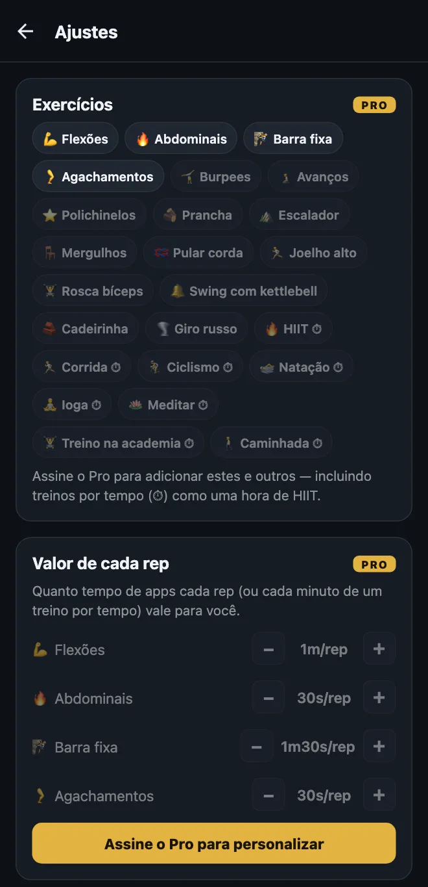
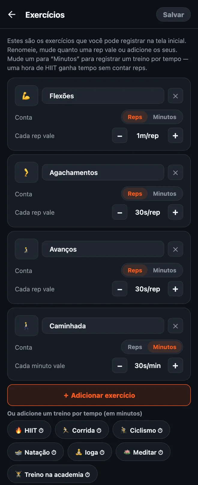

Como personalizar seus exercícios no HonorFit
Oi, gente! O HonorFit começou como um bloqueador de apps com flexões (em inglês) para mim mesmo: o Instagram fica bloqueado até eu fazer umas flexões, e eu mesmo registro no sistema de honra (sem câmera). Ele vem com quatro exercícios: flexões, abdominais, barra fixa e agachamentos.
Mas nem todo mundo quer fazer flexão. Talvez seu punho odeie, talvez você prefira fazer burpees, ou talvez você já tenha corrido 8 km hoje e queira que isso conte. Justo! Por isso dá para mudar tudo. Aqui vai exatamente como, e o que é grátis e o que precisa do Pro.
O que é grátis e o que é Pro
Vou ser direto: mudar seus exercícios é um recurso do Pro. A versão grátis tem os quatro exercícios padrão, com estes valores:
| Exercício | Cada rep vale (padrão) |
|---|---|
| 💪 Flexões | 1 minuto |
| 🔥 Abdominais | 30 segundos |
| 🧗 Barra fixa | 1 minuto e 30 segundos |
| 🦵 Agachamentos | 30 segundos |
Na versão grátis, cada roda de reps vai até 20 por série, e você pode acumular até 20 minutos por vez. Bloqueio, registro e estatísticas são grátis para sempre.
O Pro custa US$ 3 por mês ou US$ 19,99 em pagamento único. Esse é o preço nos EUA; ele varia conforme o país e a moeda, e a loja mostra o seu. Com o Pro você pode adicionar, renomear e remover exercícios, mudar quanto cada rep vale, registrar treinos por tempo em minutos, as rodas vão até 100 por série e o limite de 20 minutos some. O Pro tem outras coisas também, mas este post é só sobre exercícios.

1. Abra o editor de exercícios
- Na tela inicial, toque na engrenagem no canto superior direito para abrir os Ajustes.
- Toque no card Exercícios, lá no topo.
Você vai ver um card para cada exercício. Nada do que você fizer aqui vale até tocar em Salvar no canto superior direito, então pode fuçar à vontade. Se sair sem salvar, nada muda.

2. Renomeie um exercício ou troque o emoji
Toque no nome e digite o que quiser. “Flexões” pode virar “Flexão com joelhos” ou “Flexão na parede”, se é isso que você faz de verdade. Para trocar o ícone, toque no quadradinho do emoji à esquerda e escolha um da grade (são uns 40, quase todos de academia).
Detalhe: os nomes padrão seguem o idioma do app, então “Agachamentos” aparece como “Squats” se o seu celular estiver em inglês. Depois que você renomeia, aparece exatamente o que você digitou.
3. Defina quanto tempo de tela cada rep vale
Embaixo de cada exercício tem Cada rep vale, com um botão − e um +. Cada toque muda 5 segundos, e o mínimo é 5 segundos. Então você pode fazer burpees valerem 1m30s e polichinelos 10s, o que parecer justo para você.
Também dá para mudar só os valores sem abrir o editor: nos Ajustes tem a seção Valor de cada rep logo abaixo do card Exercícios, com os mesmos botões −/+.
4. Adicione um exercício
Tem dois jeitos:
- Toque em “＋ Adicionar exercício”. Aparece um card novo chamado “Novo exercício”, valendo 30 segundos por rep. Dê um nome e ajuste o valor.
- Toque numa sugestão. Embaixo do botão tem uma fileira de exercícios comuns que você adiciona com um toque: Burpees, Avanços, Polichinelos, Prancha, Escalador, Mergulhos, Pular corda, Joelho alto, Rosca bíceps, Swing com kettlebell, Cadeirinha e Giro russo. Eles também começam em 30 segundos por rep. Depois que você adiciona um, ele some das sugestões.
Cada exercício que você tiver ganha sua própria roda na tela inicial, então eu ficaria em uns quatro. Mais que isso e você vai ficar rolando a tela para achar o que quer.
5. Registre treinos por tempo (minutos em vez de reps)
Essa é a pergunta que eu mais recebo. Tem exercício que simplesmente não é contado em reps: uma caminhada, uma aula de ioga, uma corrida, uma hora na academia. Cada card tem uma chave Conta: Reps | Minutos. Mude para Minutos e aquela roda passa a contar minutos, e o valor vira Cada minuto vale.
Também tem sugestões por tempo de um toque (elas mostram um ⏱): HIIT, Corrida, Ciclismo, Natação, Ioga, Meditar, Treino na academia e Caminhada.
Treinos por tempo novos começam em 30 segundos por minuto, então uma hora de HIIT vale 30 minutos de apps. Atenção: quando você troca um exercício entre Reps e Minutos, o valor volta para 30 segundos, porque “1 minuto por rep” e “1 minuto por minuto” são acordos bem diferentes. É só ajustar de novo depois da troca.
A roda conta minutos inteiros, então uma prancha de 30 segundos não se encaixa bem em Minutos. Para exercícios isométricos assim, eu deixaria em Reps e decidiria o que uma rep significa para você (tipo, segurar 20 segundos).
6. Remova um ou comece do zero
- Toque no ✕ de um card para remover aquele exercício. Você sempre precisa manter pelo menos um.
- Restaurar padrão, lá embaixo, traz de volta os quatro originais com os valores originais. Como tudo aqui, só vale depois que você toca em Salvar.
Como eu escolheria os valores
O valor é o preço dos seus apps, então a ideia é um preço que você vai pagar de verdade, em vez de mentir. Alguns pontos de partida:
- Exercícios mais difíceis valem mais. Barra fixa e burpees a 1m30s, flexões a 1m, agachamentos e avanços a 30s.
- Coisas por tempo, mais ou menos pela metade. 30 segundos por minuto quer dizer que uma caminhada de 20 minutos compra 10 minutos de rolagem. Se caminhar é o hábito que você mais quer criar, suba para 1 minuto por minuto.
- Se você se pegar aumentando o número, abaixe o preço. Essa é minha regra no sistema de honra. Registrar reps que você não fez quer dizer que o preço está errado, não que você é ruim nisso.
- O modo difícil (Pro) corta todos os valores pela metade com o botão 💀 Difícil no topo da tela, se você quiser um dia mais puxado sem editar tudo.
Se quiser ideias de configurações específicas, escrevi mais dois posts: exercícios de Kegel e ponte de glúteos para desbloquear seus apps e exercícios de baixo impacto para quando flexão não é a sua.
HonorFit Blocker é um bloqueador de apps grátis para iPhone e Android. Sistema de honra, sem câmera, nada sai do seu celular. Exercícios personalizados vêm com o Pro. Não é para todo mundo, mas quem sabe alguns de vocês curtem!